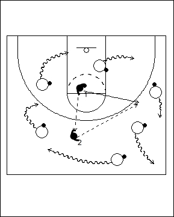

Catégorie : DRIBBLE (Dr-015)
Déroulement
- Tous les joueurs autres que les chasseurs ont un ballon. Les chasseurs ont un ballon pour deux. Tous restent sur un demi-terrain.
- Les deux chasseurs peuvent seulement :
- se passer le ballon
- courir sans ballon
- pivoter.
Les chasseurs doivent toucher les dribbleurs avec leur ballon tenu à deux mains.
- Un dribbleur touché dépose son ballon et s’ajoute aux chasseurs.
Coaching points
- La zone de jeu varie selon toute une série de critères : habileté des joueurs, vitesse de dribble, nombre de joueurs, nombre de chasseurs, etc ...